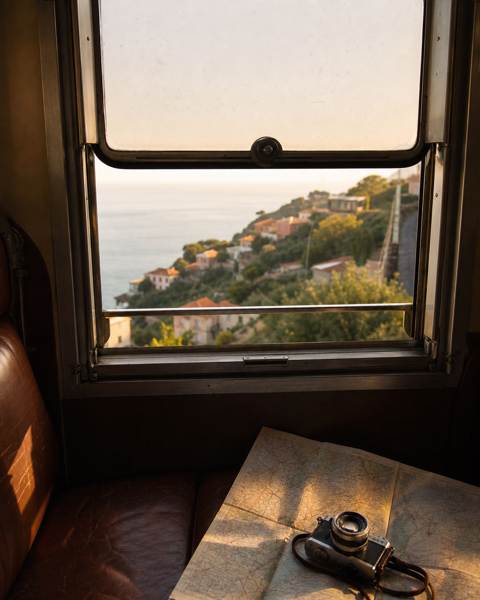
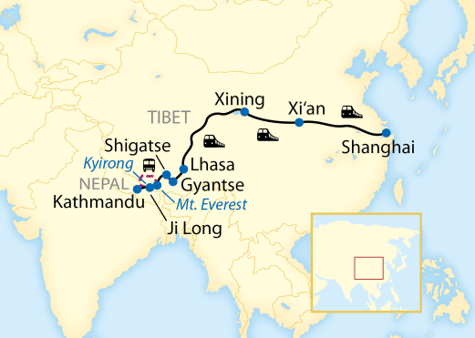
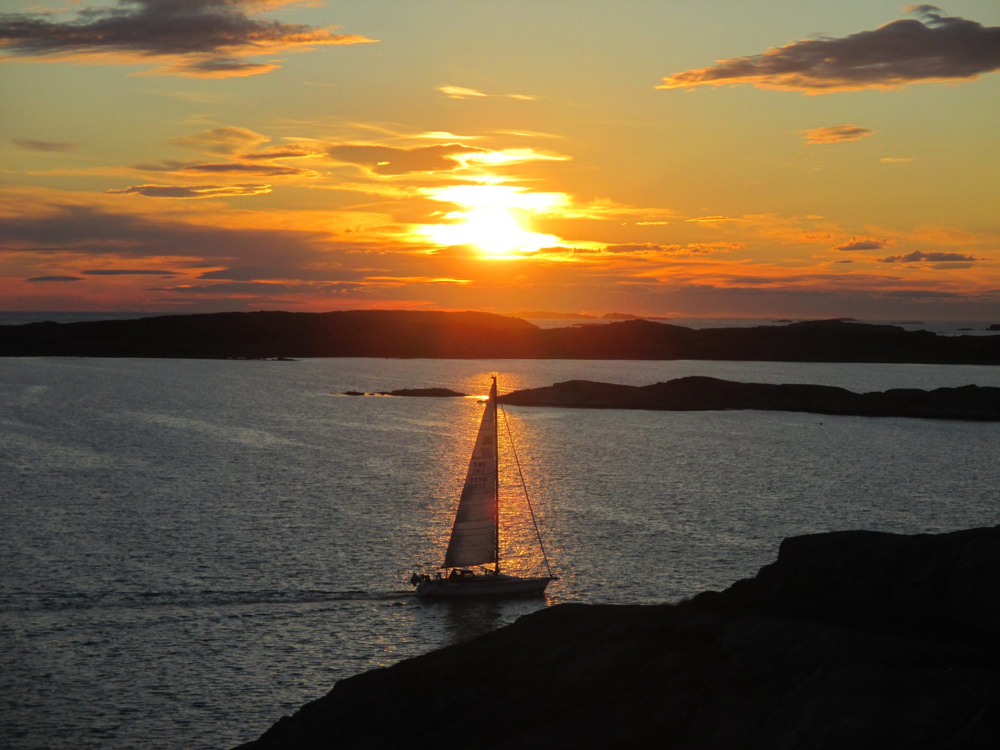

Bildquelle: Lernidee Erlebnisreisen
Himalaja Reise: China nach Nepal
Eintrag folgt.
Artikel öffnenKompletter Blog
Neue Wege, ferne Horizonte und Geschichten, die bleiben. Hier findest du Reisen, Projektbeiträge und Entdeckungen aus aller Welt.



Wandern, Landschaft und ein kleiner literarischer Blick in den Thueringer Wald.
Artikel öffnen
Ein paar kleine Eindrücke, die während eines Ocean Camps im schwedischen Veddö gesammelt habe.
Artikel öffnen